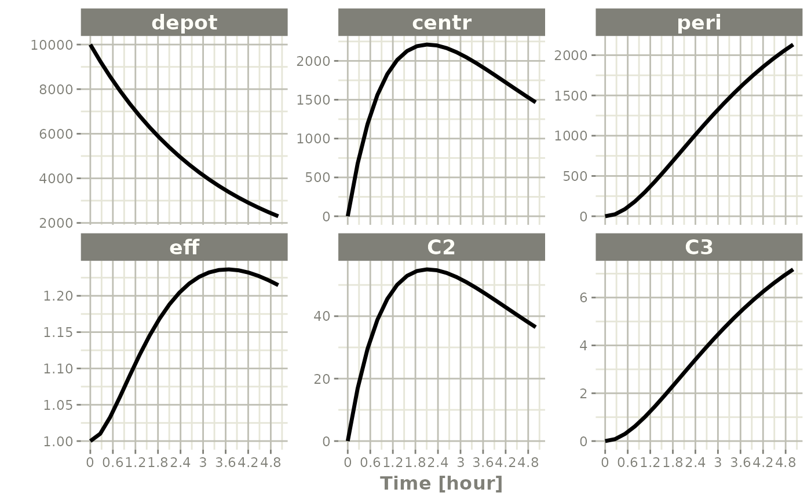

Using rxode2 data frames
Creating an interactive data frame
rxode2 supports returning a solved object that is a
modified data-frame. This is done by the predict(),
solve(), or rxSolve() methods.
library(rxode2)
library(units)
## Setup example model
mod1 <- function() {
ini({
# central
KA <- 2.94E-01
CL <- 1.86E+01
# peripheral
V2 <- 4.02E+01
Q <- 1.05E+01
V3 <- 2.97E+02
# effects
Kin <- 1
Kout <- 1
EC50 <- 200
})
model({
C2 <- centr/V2
C3 <- peri/V3
d/dt(depot) <- -KA*depot
d/dt(centr) <- KA*depot - CL*C2 - Q*C2 + Q*C3
d/dt(peri) <- Q*C2 - Q*C3
d/dt(eff) <- Kin - Kout*(1-C2/(EC50+C2))*eff
eff(0) <- 1
})
}
## Seup parameters and initial conditions
## Setup dosing event information
ev <- et(amountUnits="mg", timeUnits = "hours") %>%
et(amt=10000, addl=9, ii=12) %>%
et(amt=20000, addl=4, time=120, ii=24) %>%
et(0:240)
## Now solve
x <- predict(mod1, ev)
#> C model:
#> // Define translation state order for 4 states
#> #define __DDT0__ 0 // depot
#> #define _DEPOT_ 0 // depot
#> #define __DDT1__ 1 // centr
#> #define __DDT2__ 2 // peri
#> #define __DDT3__ 3 // eff
#> // Define 2 LHS values
#> #define _LHS_0_ 0 // C2
#> #define _LHS_1_ 1 // C3
#> #define _getRxSolve_ _rx85bdb4e07d8b2e04989ec4406e3d8f9b0__getRxSolve__5pb9
#> #define _evalUdf _rx85bdb4e07d8b2e04989ec4406e3d8f9b1__evalUdf_0SUH
#> #define _solveData _rx85bdb4e07d8b2e04989ec4406e3d8f9b2__solveData_jlsA
#> #define _assign_ptr _rx85bdb4e07d8b2e04989ec4406e3d8f9b3__assign_ptr_2JOC
#> #define _rxRmModelLib _rx85bdb4e07d8b2e04989ec4406e3d8f9b4__rxRmModelLib_P3Oy
#> #define _rxGetModelLib _rx85bdb4e07d8b2e04989ec4406e3d8f9b5__rxGetModelLib_HgjC
#> #define _old_c _rx85bdb4e07d8b2e04989ec4406e3d8f9b6__old_c_yj3W
#> #define _ptrid _rx85bdb4e07d8b2e04989ec4406e3d8f9b7__ptrid_hg1D
#> #define _rxIsCurrentC _rx85bdb4e07d8b2e04989ec4406e3d8f9b8__rxIsCurrentC_IdTQ
#> #define _sumPS _rx85bdb4e07d8b2e04989ec4406e3d8f9b9__sumPS_hwBD
#> #define _prodPS _rx85bdb4e07d8b2e04989ec4406e3d8f9b10__prodPS_gUde
#> #define _prodType _rx85bdb4e07d8b2e04989ec4406e3d8f9b11__prodType_5llz
#> #define _sumType _rx85bdb4e07d8b2e04989ec4406e3d8f9b12__sumType_yOSJ
#> #define _update_par_ptr _rx85bdb4e07d8b2e04989ec4406e3d8f9b13__update_par_ptr_AWUm
#> #define _getParCov _rx85bdb4e07d8b2e04989ec4406e3d8f9b14__getParCov_Ci4L
#> #define _rxode2_rxAssignPtr _rx85bdb4e07d8b2e04989ec4406e3d8f9b15__rxode2_rxAssignPtr_pGZK
#> #define _rxQr _rx85bdb4e07d8b2e04989ec4406e3d8f9b16__rxQr_aBwX
#> #define _compareFactorVal _rx85bdb4e07d8b2e04989ec4406e3d8f9b17__compareFactorVal_XHRN
#> #define _sum _rx85bdb4e07d8b2e04989ec4406e3d8f9b18__sum_1SO1
#> #define _udf _rx85bdb4e07d8b2e04989ec4406e3d8f9b19__udf_NYrN
#> #define _sign _rx85bdb4e07d8b2e04989ec4406e3d8f9b20__sign_WbGH
#> #define _prod _rx85bdb4e07d8b2e04989ec4406e3d8f9b21__prod_TvOD
#> #define _max _rx85bdb4e07d8b2e04989ec4406e3d8f9b22__max_f3z9
#> #define _min _rx85bdb4e07d8b2e04989ec4406e3d8f9b23__min_WqiE
#> #define _transit4P _rx85bdb4e07d8b2e04989ec4406e3d8f9b24__transit4P_Xp1T
#> #define _transit3P _rx85bdb4e07d8b2e04989ec4406e3d8f9b25__transit3P_noPD
#> #define _assignFuns0 _rx85bdb4e07d8b2e04989ec4406e3d8f9b26__assignFuns0_PfVe
#> #define _assignFuns _rx85bdb4e07d8b2e04989ec4406e3d8f9b27__assignFuns_Vphs
#> #define _rxord _rx85bdb4e07d8b2e04989ec4406e3d8f9b28__rxord_0tzV
#> #define __assignFuns2 _rx85bdb4e07d8b2e04989ec4406e3d8f9b29___assignFuns2_Mmad
#> #define _llikCauchyDscale _rx85bdb4e07d8b2e04989ec4406e3d8f9b30__llikCauchyDscale_rZFu
#> #define _llikCauchyDlocation _rx85bdb4e07d8b2e04989ec4406e3d8f9b31__llikCauchyDlocation_rFOl
#> #define _llikCauchy _rx85bdb4e07d8b2e04989ec4406e3d8f9b32__llikCauchy_7CAf
#> #define _llikGammaDrate _rx85bdb4e07d8b2e04989ec4406e3d8f9b33__llikGammaDrate_rvYZ
#> #define _llikGammaDshape _rx85bdb4e07d8b2e04989ec4406e3d8f9b34__llikGammaDshape_gF2u
#> #define _llikGamma _rx85bdb4e07d8b2e04989ec4406e3d8f9b35__llikGamma_4zbA
#> #define _llikWeibullDscale _rx85bdb4e07d8b2e04989ec4406e3d8f9b36__llikWeibullDscale_u2aE
#> #define _llikWeibullDshape _rx85bdb4e07d8b2e04989ec4406e3d8f9b37__llikWeibullDshape_uohD
#> #define _llikWeibull _rx85bdb4e07d8b2e04989ec4406e3d8f9b38__llikWeibull_jDSK
#> #define _llikUnifDbeta _rx85bdb4e07d8b2e04989ec4406e3d8f9b39__llikUnifDbeta_ZFSu
#> #define _llikUnifDalpha _rx85bdb4e07d8b2e04989ec4406e3d8f9b40__llikUnifDalpha_yota
#> #define _llikUnif _rx85bdb4e07d8b2e04989ec4406e3d8f9b41__llikUnif_lziD
#> #define _llikGeomDp _rx85bdb4e07d8b2e04989ec4406e3d8f9b42__llikGeomDp_IirE
#> #define _llikGeom _rx85bdb4e07d8b2e04989ec4406e3d8f9b43__llikGeom_0wRk
#> #define _llikFDdf2 _rx85bdb4e07d8b2e04989ec4406e3d8f9b44__llikFDdf2_fPLj
#> #define _llikFDdf1 _rx85bdb4e07d8b2e04989ec4406e3d8f9b45__llikFDdf1_f5r4
#> #define _llikF _rx85bdb4e07d8b2e04989ec4406e3d8f9b46__llikF_q6UF
#> #define _llikExpDrate _rx85bdb4e07d8b2e04989ec4406e3d8f9b47__llikExpDrate_gAxJ
#> #define _llikExp _rx85bdb4e07d8b2e04989ec4406e3d8f9b48__llikExp_Mtp6
#> #define _llikChisqDdf _rx85bdb4e07d8b2e04989ec4406e3d8f9b49__llikChisqDdf_ulNz
#> #define _llikChisq _rx85bdb4e07d8b2e04989ec4406e3d8f9b50__llikChisq_LwD1
#> #define _llikTDsd _rx85bdb4e07d8b2e04989ec4406e3d8f9b51__llikTDsd_9qDD
#> #define _llikTDmean _rx85bdb4e07d8b2e04989ec4406e3d8f9b52__llikTDmean_2wFm
#> #define _llikTDdf _rx85bdb4e07d8b2e04989ec4406e3d8f9b53__llikTDdf_HsIy
#> #define _llikT _rx85bdb4e07d8b2e04989ec4406e3d8f9b54__llikT_alpl
#> #define _llikBetaDshape2 _rx85bdb4e07d8b2e04989ec4406e3d8f9b55__llikBetaDshape2_P85e
#> #define _llikBetaDshape1 _rx85bdb4e07d8b2e04989ec4406e3d8f9b56__llikBetaDshape1_beKy
#> #define _llikBeta _rx85bdb4e07d8b2e04989ec4406e3d8f9b57__llikBeta_isyD
#> #define _llikNbinomMuDmu _rx85bdb4e07d8b2e04989ec4406e3d8f9b58__llikNbinomMuDmu_fO2c
#> #define _llikNbinomMu _rx85bdb4e07d8b2e04989ec4406e3d8f9b59__llikNbinomMu_bPrW
#> #define _llikNbinomDprob _rx85bdb4e07d8b2e04989ec4406e3d8f9b60__llikNbinomDprob_y1fN
#> #define _llikNbinom _rx85bdb4e07d8b2e04989ec4406e3d8f9b61__llikNbinom_ugfk
#> #define _llikBinomDprob _rx85bdb4e07d8b2e04989ec4406e3d8f9b62__llikBinomDprob_XEVP
#> #define _llikBinom _rx85bdb4e07d8b2e04989ec4406e3d8f9b63__llikBinom_jdOx
#> #define _llikPoisDlambda _rx85bdb4e07d8b2e04989ec4406e3d8f9b64__llikPoisDlambda_I3ZD
#> #define _llikPois _rx85bdb4e07d8b2e04989ec4406e3d8f9b65__llikPois_7wnk
#> #define _llikNormDsd _rx85bdb4e07d8b2e04989ec4406e3d8f9b66__llikNormDsd_XX5O
#> #define _llikNormDmean _rx85bdb4e07d8b2e04989ec4406e3d8f9b67__llikNormDmean_Agfw
#> #define _llikNorm _rx85bdb4e07d8b2e04989ec4406e3d8f9b68__llikNorm_CyNe
#> #define simeps _rx85bdb4e07d8b2e04989ec4406e3d8f9b69_simeps_o4Wl
#> #define simeta _rx85bdb4e07d8b2e04989ec4406e3d8f9b70_simeta_QYC1
#> #define expit _rx85bdb4e07d8b2e04989ec4406e3d8f9b71_expit_yBms
#> #define logit _rx85bdb4e07d8b2e04989ec4406e3d8f9b72_logit_pbu2
#> #define gammapDer _rx85bdb4e07d8b2e04989ec4406e3d8f9b73_gammapDer_85hP
#> #define lowergamma _rx85bdb4e07d8b2e04989ec4406e3d8f9b74_lowergamma_47wD
#> #define uppergamma _rx85bdb4e07d8b2e04989ec4406e3d8f9b75_uppergamma_fCYp
#> #define gammaqInva _rx85bdb4e07d8b2e04989ec4406e3d8f9b76_gammaqInva_7GH0
#> #define gammaqInv _rx85bdb4e07d8b2e04989ec4406e3d8f9b77_gammaqInv_qPki
#> #define gammapInva _rx85bdb4e07d8b2e04989ec4406e3d8f9b78_gammapInva_VyMA
#> #define gammapInv _rx85bdb4e07d8b2e04989ec4406e3d8f9b79_gammapInv_m1mA
#> #define gammaq _rx85bdb4e07d8b2e04989ec4406e3d8f9b80_gammaq_1mpx
#> #define gammap _rx85bdb4e07d8b2e04989ec4406e3d8f9b81_gammap_NAbn
#> #define phi _rx85bdb4e07d8b2e04989ec4406e3d8f9b82_phi_2jD0
#> #define d2ELUa _rx85bdb4e07d8b2e04989ec4406e3d8f9b83_d2ELUa_7gdK
#> #define dELUa _rx85bdb4e07d8b2e04989ec4406e3d8f9b84_dELUa_Ohhv
#> #define d2aELU _rx85bdb4e07d8b2e04989ec4406e3d8f9b85_d2aELU_SaAZ
#> #define d2ELU _rx85bdb4e07d8b2e04989ec4406e3d8f9b86_d2ELU_tapa
#> #define dELU _rx85bdb4e07d8b2e04989ec4406e3d8f9b87_dELU_mOqj
#> #define ELU _rx85bdb4e07d8b2e04989ec4406e3d8f9b88_ELU_J66n
#> #define dPReLUa1 _rx85bdb4e07d8b2e04989ec4406e3d8f9b89_dPReLUa1_N3zb
#> #define dPReLUa _rx85bdb4e07d8b2e04989ec4406e3d8f9b90_dPReLUa_9X7x
#> #define dPReLU _rx85bdb4e07d8b2e04989ec4406e3d8f9b91_dPReLU_2Awy
#> #define PReLU _rx85bdb4e07d8b2e04989ec4406e3d8f9b92_PReLU_isy2
#> #define dSwish _rx85bdb4e07d8b2e04989ec4406e3d8f9b93_dSwish_RdzJ
#> #define Swish _rx85bdb4e07d8b2e04989ec4406e3d8f9b94_Swish_rXsV
#> #define dlReLU _rx85bdb4e07d8b2e04989ec4406e3d8f9b95_dlReLU_rrL0
#> #define lReLU _rx85bdb4e07d8b2e04989ec4406e3d8f9b96_lReLU_CwHs
#> #define dSELU _rx85bdb4e07d8b2e04989ec4406e3d8f9b97_dSELU_x0YD
#> #define SELU _rx85bdb4e07d8b2e04989ec4406e3d8f9b98_SELU_ejsN
#> #define d4softplus _rx85bdb4e07d8b2e04989ec4406e3d8f9b99_d4softplus_tqj2
#> #define d3softplus _rx85bdb4e07d8b2e04989ec4406e3d8f9b100_d3softplus_KkuC
#> #define d2softplus _rx85bdb4e07d8b2e04989ec4406e3d8f9b101_d2softplus_TNOD
#> #define dsoftplus _rx85bdb4e07d8b2e04989ec4406e3d8f9b102_dsoftplus_0MWq
#> #define softplus _rx85bdb4e07d8b2e04989ec4406e3d8f9b103_softplus_8NGU
#> #define d4GELU _rx85bdb4e07d8b2e04989ec4406e3d8f9b104_d4GELU_15zw
#> #define d3GELU _rx85bdb4e07d8b2e04989ec4406e3d8f9b105_d3GELU_77MT
#> #define d2GELU _rx85bdb4e07d8b2e04989ec4406e3d8f9b106_d2GELU_mU6w
#> #define dGELU _rx85bdb4e07d8b2e04989ec4406e3d8f9b107_dGELU_hVWG
#> #define GELU _rx85bdb4e07d8b2e04989ec4406e3d8f9b108_GELU_iyen
#> #define dReLU _rx85bdb4e07d8b2e04989ec4406e3d8f9b109_dReLU_4spi
#> #define ReLU _rx85bdb4e07d8b2e04989ec4406e3d8f9b110_ReLU_MWT6
#> #define riweibull _rx85bdb4e07d8b2e04989ec4406e3d8f9b111_riweibull_VRYe
#> #define riunif _rx85bdb4e07d8b2e04989ec4406e3d8f9b112_riunif_9Ita
#> #define rit_ _rx85bdb4e07d8b2e04989ec4406e3d8f9b113_rit__dGJL
#> #define ripois _rx85bdb4e07d8b2e04989ec4406e3d8f9b114_ripois_l03G
#> #define ribeta _rx85bdb4e07d8b2e04989ec4406e3d8f9b115_ribeta_aI5l
#> #define rigamma _rx85bdb4e07d8b2e04989ec4406e3d8f9b116_rigamma_lO3k
#> #define rigeom _rx85bdb4e07d8b2e04989ec4406e3d8f9b117_rigeom_WHGX
#> #define rif _rx85bdb4e07d8b2e04989ec4406e3d8f9b118_rif_CdkG
#> #define riexp _rx85bdb4e07d8b2e04989ec4406e3d8f9b119_riexp_sq2N
#> #define richisq _rx85bdb4e07d8b2e04989ec4406e3d8f9b120_richisq_BvuB
#> #define ricauchy _rx85bdb4e07d8b2e04989ec4406e3d8f9b121_ricauchy_r0sO
#> #define rinbinomMu _rx85bdb4e07d8b2e04989ec4406e3d8f9b122_rinbinomMu_4eup
#> #define rinbinom _rx85bdb4e07d8b2e04989ec4406e3d8f9b123_rinbinom_VbTs
#> #define ribinom _rx85bdb4e07d8b2e04989ec4406e3d8f9b124_ribinom_fOYF
#> #define rinorm _rx85bdb4e07d8b2e04989ec4406e3d8f9b125_rinorm_C4Jz
#> #define rxweibull _rx85bdb4e07d8b2e04989ec4406e3d8f9b126_rxweibull_7iE8
#> #define rxunif _rx85bdb4e07d8b2e04989ec4406e3d8f9b127_rxunif_vtCF
#> #define rxt_ _rx85bdb4e07d8b2e04989ec4406e3d8f9b128_rxt__cRJ6
#> #define rxpois _rx85bdb4e07d8b2e04989ec4406e3d8f9b129_rxpois_Gev1
#> #define rxbeta _rx85bdb4e07d8b2e04989ec4406e3d8f9b130_rxbeta_Yq4C
#> #define rxgamma _rx85bdb4e07d8b2e04989ec4406e3d8f9b131_rxgamma_UGPR
#> #define rxgeom _rx85bdb4e07d8b2e04989ec4406e3d8f9b132_rxgeom_B41j
#> #define rxf _rx85bdb4e07d8b2e04989ec4406e3d8f9b133_rxf_yXA3
#> #define rxexp _rx85bdb4e07d8b2e04989ec4406e3d8f9b134_rxexp_Scak
#> #define rxchisq _rx85bdb4e07d8b2e04989ec4406e3d8f9b135_rxchisq_WU0x
#> #define rxcauchy _rx85bdb4e07d8b2e04989ec4406e3d8f9b136_rxcauchy_SyXM
#> #define rxnbinomMu _rx85bdb4e07d8b2e04989ec4406e3d8f9b137_rxnbinomMu_V4ye
#> #define rxnbinom _rx85bdb4e07d8b2e04989ec4406e3d8f9b138_rxnbinom_zXlY
#> #define rxbinom _rx85bdb4e07d8b2e04989ec4406e3d8f9b139_rxbinom_mdNM
#> #define rxnorm _rx85bdb4e07d8b2e04989ec4406e3d8f9b140_rxnorm_qSBx
#> #define linCmtB _rx85bdb4e07d8b2e04989ec4406e3d8f9b141_linCmtB_i1cp
#> #define linCmtA _rx85bdb4e07d8b2e04989ec4406e3d8f9b142_linCmtA_dhrH
#> #include <rxode2_model_shared.h>
#> #define __MAX_PROD__ 0
#> #define _CMT CMT
#> #define _SYNC_simeps_ for (int _svari=_solveData->neps; _svari--;){ if (_solveData->svar[_svari] == 0) {KA = _PP[0];}; if (_solveData->svar[_svari] == 1) {CL = _PP[1];}; if (_solveData->svar[_svari] == 2) {V2 = _PP[2];}; if (_solveData->svar[_svari] == 3) {Q = _PP[3];}; if (_solveData->svar[_svari] == 4) {V3 = _PP[4];}; if (_solveData->svar[_svari] == 5) {Kin = _PP[5];}; if (_solveData->svar[_svari] == 6) {Kout = _PP[6];}; if (_solveData->svar[_svari] == 7) {EC50 = _PP[7];}; }
#> #define _SYNC_simeta_ for (int _ovari=_solveData->neta; _ovari--;){ if (_solveData->ovar[_ovari] == 0) {KA = _PP[0];}; if (_solveData->ovar[_ovari] == 1) {CL = _PP[1];}; if (_solveData->ovar[_ovari] == 2) {V2 = _PP[2];}; if (_solveData->ovar[_ovari] == 3) {Q = _PP[3];}; if (_solveData->ovar[_ovari] == 4) {V3 = _PP[4];}; if (_solveData->ovar[_ovari] == 5) {Kin = _PP[5];}; if (_solveData->ovar[_ovari] == 6) {Kout = _PP[6];}; if (_solveData->ovar[_ovari] == 7) {EC50 = _PP[7];}; }
#> _getRxSolve_t _getRxSolve_;
#> _simfun simeps;
#> _simfun simeta;
#> _udf_type _evalUdf=NULL;
#> rx_solve *_solveData=NULL;
#> rxode2_assign_ptr _assign_ptr=NULL;
#> _rxRmModelLibType _rxRmModelLib=NULL;
#> _rxGetModelLibType _rxGetModelLib=NULL;
#> rxode2_ode_solver_old_c _old_c=NULL;
#> rxode2_fn0i _ptrid=NULL;
#> _rxIsCurrentC_type _rxIsCurrentC=NULL;
#> _rxSumType _sumPS=NULL;
#> _rxProdType _prodPS=NULL;
#> rxode2_fn0i _prodType=NULL;
#> rxode2_fn0i _sumType=NULL;
#> _update_par_ptr_p _update_par_ptr=NULL;
#> _getParCov_p _getParCov=NULL;
#> linCmtA_p linCmtA;
#> linCmtB_p linCmtB;
#> _rx_asgn _rxode2_rxAssignPtr=NULL;
#> _rx_asgn _rxQr=NULL;
#> rxode2_fn phi;
#> rxode2_fn ReLU;
#> rxode2_fn dReLU;
#> rxode2_fn GELU;
#> rxode2_fn dGELU;
#> rxode2_fn d2GELU;
#> rxode2_fn d3GELU;
#> rxode2_fn d4GELU;
#> rxode2_fn softplus;
#> rxode2_fn dsoftplus;
#> rxode2_fn d2softplus;
#> rxode2_fn d3softplus;
#> rxode2_fn d4softplus;
#> rxode2_fn SELU;
#> rxode2_fn dSELU;
#> rxode2_fn lReLU;
#> rxode2_fn dlReLU;
#> rxode2_fn Swish;
#> rxode2_fn dSwish;
#> rxode2_fn2 PReLU;
#> rxode2_fn2 dPReLU;
#> rxode2_fn2 dPReLUa;
#> rxode2_fn2 dPReLUa1;
#> rxode2_fn2 ELU;
#> rxode2_fn2 dELU;
#> rxode2_fn2 d2ELU;
#> rxode2_fn2 d2aELU;
#> rxode2_fn2 dELUa;
#> rxode2_fn2 d2ELUa;
#> rxode2_fn3 logit;
#> rxode2_fn3 expit;
#> rxode2_fn2 gammap;
#> rxode2_fn2 gammaq;
#> rxode2_fn2 lowergamma;
#> rxode2_fn2 uppergamma;
#> rxode2_fn2 gammapInv;
#> rxode2_fn2 gammapDer;
#> rxode2_fn2 gammapInva;
#> rxode2_fn2 gammaqInv;
#> rxode2_fn2 gammaqInva;
#> rxode2i_fn2 rxnorm;
#> rxode2i_rxbinom rxbinom;
#> rxode2i_rxbinom rxnbinom;
#> rxode2i_rxbinom rxnbinomMu;
#> rxode2i_fn2 rxcauchy;
#> rxode2i_fn rxchisq;
#> rxode2i_fn rxexp;
#> rxode2i_fn2 rxf;
#> rxode2i_ifn rxgeom;
#> rxode2i_fn2 rxgamma;
#> rxode2i_fn2 rxbeta;
#> rxode2i_ifn rxpois;
#> rxode2i_fn rxt_;
#> rxode2i_fn2 rxunif;
#> rxode2i_fn2 rxweibull;
#> rxode2i2_fn2 rinorm;
#> rxode2i2_ribinom ribinom;
#> rxode2i2_ribinom rinbinom;
#> rxode2i2_ribinom rinbinomMu;
#> rxode2i2_fn2 ricauchy;
#> rxode2i2_fn richisq;
#> rxode2i2_fn riexp;
#> rxode2i2_fn2 rif;
#> rxode2i2_ifn rigeom;
#> rxode2i2_fn2 rigamma;
#> rxode2i2_fn2 ribeta;
#> rxode2i2_ifn ripois;
#> rxode2i2_fn rit_;
#> rxode2i2_fn2 riunif;
#> rxode2i2_fn2 riweibull;
#> rxode2_llikNormFun _llikNorm;
#> rxode2_llikNormFun _llikNormDmean;
#> rxode2_llikNormFun _llikNormDsd;
#> rxode2_llikPoisFun _llikPois;
#> rxode2_llikPoisFun _llikPoisDlambda;
#> rxode2_llikBinomFun _llikBinom;
#> rxode2_llikBinomFun _llikBinomDprob;
#> rxode2_llikBinomFun _llikNbinom;
#> rxode2_llikBinomFun _llikNbinomDprob;
#> rxode2_llikBinomFun _llikNbinomMu;
#> rxode2_llikBinomFun _llikNbinomMuDmu;
#> rxode2_llikBetaFun _llikBeta;
#> rxode2_llikBetaFun _llikBetaDshape1;
#> rxode2_llikBetaFun _llikBetaDshape2;
#> rxode2_llikTFun _llikT;
#> rxode2_llikTFun _llikTDdf;
#> rxode2_llikTFun _llikTDmean;
#> rxode2_llikTFun _llikTDsd;
#> rxode2_llikChisqFun _llikChisq;
#> rxode2_llikChisqFun _llikChisqDdf;
#> rxode2_llikExpFun _llikExp;
#> rxode2_llikExpFun _llikExpDrate;
#> rxode2_llikFFun _llikF;
#> rxode2_llikFFun _llikFDdf1;
#> rxode2_llikFFun _llikFDdf2;
#> rxode2_llikGeomFun _llikGeom;
#> rxode2_llikGeomFun _llikGeomDp;
#> rxode2_llikUnifFun _llikUnif;
#> rxode2_llikUnifFun _llikUnifDalpha;
#> rxode2_llikUnifFun _llikUnifDbeta;
#> rxode2_llikWeibullFun _llikWeibull;
#> rxode2_llikWeibullFun _llikWeibullDshape;
#> rxode2_llikWeibullFun _llikWeibullDscale;
#> rxode2_llikGammaFun _llikGamma;
#> rxode2_llikGammaFun _llikGammaDshape;
#> rxode2_llikGammaFun _llikGammaDrate;
#> rxode2_llikCauchyFun _llikCauchy;
#> rxode2_llikCauchyFun _llikCauchyDlocation;
#> rxode2_llikCauchyFun _llikCauchyDscale;
#> rxode2_compareFactorVal_fn _compareFactorVal;
#> #include "extraC.h"
#> double _prod(double *input, double *p, int type, int n, ...){
#> va_list valist;
#> va_start(valist, n);
#> for (unsigned int i = 0; i < n; i++){
#> input[i] = va_arg(valist, double);
#> }
#> va_end(valist);
#> return _prodPS(input, p, n, type);
#> }
#> double _udf(const char *funName, double *input, int n, ...) {
#> if (n == -42) Rf_error("%s", "this has a ui user function that cannot be called directly");
#> va_list valist;
#> va_start(valist, n);
#> for (unsigned int i = 0; i < n; i++){
#> input[i] = va_arg(valist, double);
#> }
#> va_end(valist);
#> return _evalUdf(funName, n, input);
#> }
#> double _sum(double *input, double *pld, int m, int type, int n, ...){
#> va_list valist;
#> va_start(valist, n);
#> for (unsigned int i = 0; i < n; i++){
#> input[i] = va_arg(valist, double);
#> }
#> va_end(valist);
#> double ret = _sumPS(input, n, pld, m, type);
#> if (type == 2 && m < 0){
#> for (int i = -m; i--;){
#> pld[i] = 0.0;
#> }
#> }
#> return ret;
#> }
#> double _sign(unsigned int n, ...) {
#> va_list valist;
#> va_start(valist, n);
#> double s = 1;
#> for (unsigned int i = 0; i < n; i++) {
#> s = sign(va_arg(valist, double))*s;
#> if (s == 0){
#> break;
#> }
#> }
#> va_end(valist);
#> return s;
#> }
#> double _rxord(int _cSub, unsigned int n, ...) {
#> rx_solving_options_ind* ind = &(_solveData->subjects[_cSub]);
#> if (!ind->inLhs) {
#> return 1.0;
#> }
#> va_list valist;
#> va_start(valist, n);
#> double ret = 1.0;
#> double p = 0.0;
#> double u = rxunif(ind, 0.0, 1.0);
#> int found = 0;
#> for (unsigned int i = 0; i < n; i++) {
#> p += va_arg(valist, double);
#> if (!found) {
#> if (u < p) {
#> ret = (double)(i+1);
#> found = 1;
#> }
#> }
#> }
#> if (!found) ret =(double)(n+1);
#> va_end(valist);
#> return ret;
#> }
#> double _max(unsigned int n, ...) {
#> va_list valist;
#> va_start(valist, n);
#> double mx = NA_REAL;
#> double tmp = 0;
#> if (n >= 1){
#> mx = va_arg(valist, double);
#> for (unsigned int i = 1; i < n; i++) {
#> tmp = va_arg(valist, double);
#> if (tmp>mx) mx=tmp;
#> }
#> va_end(valist);
#> }
#> return mx;
#> }
#> double _min(unsigned int n, ...){
#> va_list valist;
#> va_start(valist, n);
#> double mn = NA_REAL;
#> double tmp = 0;
#> if (n >= 1){
#> mn = va_arg(valist, double);
#> for (unsigned int i = 1; i < n; i++){
#> tmp = va_arg(valist, double);
#> if (tmp<mn) mn=tmp;
#> }
#> va_end(valist);
#> }
#> return mn;
#> }
#> double _transit4P(int cmt, double t, unsigned int id, double n, double mtt, double bio){
#> double nd = (double) n;
#> double ktr = (nd+1)/mtt;
#> double lktr = _safe_log(nd+1)-_safe_log(mtt);
#> double tlast = _solveData->subjects[id].tlastS[cmt];
#> double dose = _solveData->subjects[id].curDoseS[cmt];
#> if (ISNA(dose)) dose = 0.0;
#> if (ISNA(tlast)) tlast = 0.0;
#> double tad = (t-tlast);
#> return exp(_safe_log(bio*dose)+lktr+n*(lktr+_safe_log(tad))-ktr*(tad)-lgamma1p(nd));
#> }
#> double _transit3P(int cmt, double t, unsigned int id, double n, double mtt){
#> double nd = (double) n;
#> double ktr = (nd+1)/mtt;
#> double lktr = _safe_log(nd+1)-_safe_log(mtt);
#> double tlast = _solveData->subjects[id].tlastS[cmt];
#> if (ISNA(tlast)) tlast = 0.0;
#> double tad = t-tlast;
#> double podo = _solveData->subjects[id].curDoseS[cmt];
#> if (ISNA(podo)) podo = 0.0;
#> return exp(_safe_log(podo)+lktr+n*(lktr+_safe_log(tad))-ktr*(tad)-lgamma1p(nd));
#> }
#> void _assignFuns0(void) {
#> _evalUdf = (_udf_type) R_GetCCallable("rxode2", "_rxode2_evalUdf");
#> _getRxSolve_ = (_getRxSolve_t) R_GetCCallable("rxode2","getRxSolve_");
#> _assign_ptr=(rxode2_assign_ptr) R_GetCCallable("rxode2","rxode2_assign_fn_pointers");
#> _rxRmModelLib=(_rxRmModelLibType) R_GetCCallable("rxode2","rxRmModelLib");
#> _rxGetModelLib=(_rxGetModelLibType) R_GetCCallable("rxode2","rxGetModelLib");
#> _rxode2_rxAssignPtr=(_rx_asgn)R_GetCCallable("rxode2","_rxode2_rxAssignPtr");
#> _rxQr=(_rx_asgn)R_GetCCallable("rxode2","_rxode2_rxQr");
#> _rxIsCurrentC = (_rxIsCurrentC_type)R_GetCCallable("rxode2","rxIsCurrentC");
#> _sumPS = (_rxSumType) R_GetCCallable("PreciseSums","PreciseSums_sum_r");
#> _prodPS = (_rxProdType) R_GetCCallable("PreciseSums","PreciseSums_prod_r");
#> _prodType=(rxode2_fn0i)R_GetCCallable("PreciseSums", "PreciseSums_prod_get");
#> _sumType=(rxode2_fn0i)R_GetCCallable("PreciseSums", "PreciseSums_sum_get");
#> _ptrid=(rxode2_fn0i)R_GetCCallable("rxode2", "rxode2_current_fn_pointer_id");
#> _compareFactorVal=(rxode2_compareFactorVal_fn) R_GetCCallable("rxode2", "compareFactorVal");
#> _update_par_ptr = (_update_par_ptr_p) R_GetCCallable("rxode2","_update_par_ptr");
#> _getParCov = (_getParCov_p) R_GetCCallable("rxode2","_getParCov");
#> // dynamic start
#> _llikCauchyDscale = (rxode2_llikCauchyFun) R_GetCCallable("rxode2ll", "rxLlikCauchyDscale");
#> _llikCauchyDlocation = (rxode2_llikCauchyFun) R_GetCCallable("rxode2ll", "rxLlikCauchyDlocation");
#> _llikCauchy = (rxode2_llikCauchyFun) R_GetCCallable("rxode2ll", "rxLlikCauchy");
#> _llikGammaDrate = (rxode2_llikGammaFun) R_GetCCallable("rxode2ll", "rxLlikGammaDrate");
#> _llikGammaDshape = (rxode2_llikGammaFun) R_GetCCallable("rxode2ll", "rxLlikGammaDshape");
#> _llikGamma = (rxode2_llikGammaFun) R_GetCCallable("rxode2ll", "rxLlikGamma");
#> _llikWeibullDscale = (rxode2_llikWeibullFun) R_GetCCallable("rxode2ll", "rxLlikWeibullDscale");
#> _llikWeibullDshape = (rxode2_llikWeibullFun) R_GetCCallable("rxode2ll", "rxLlikWeibullDshape");
#> _llikWeibull = (rxode2_llikWeibullFun) R_GetCCallable("rxode2ll", "rxLlikWeibull");
#> _llikUnifDbeta = (rxode2_llikUnifFun) R_GetCCallable("rxode2ll", "rxLlikUnifDbeta");
#> _llikUnifDalpha = (rxode2_llikUnifFun) R_GetCCallable("rxode2ll", "rxLlikUnifDalpha");
#> _llikUnif = (rxode2_llikUnifFun) R_GetCCallable("rxode2ll", "rxLlikUnif");
#> _llikGeomDp = (rxode2_llikGeomFun) R_GetCCallable("rxode2ll", "rxLlikGeomDp");
#> _llikGeom = (rxode2_llikGeomFun) R_GetCCallable("rxode2ll", "rxLlikGeom");
#> _llikFDdf2 = (rxode2_llikFFun) R_GetCCallable("rxode2ll", "rxLlikFDdf2");
#> _llikFDdf1 = (rxode2_llikFFun) R_GetCCallable("rxode2ll", "rxLlikFDdf1");
#> _llikF = (rxode2_llikFFun) R_GetCCallable("rxode2ll", "rxLlikF");
#> _llikExpDrate = (rxode2_llikExpFun) R_GetCCallable("rxode2ll", "rxLlikExpDrate");
#> _llikExp = (rxode2_llikExpFun) R_GetCCallable("rxode2ll", "rxLlikExp");
#> _llikChisqDdf = (rxode2_llikChisqFun) R_GetCCallable("rxode2ll", "rxLlikChisqDdf");
#> _llikChisq = (rxode2_llikChisqFun) R_GetCCallable("rxode2ll", "rxLlikChisq");
#> _llikTDsd = (rxode2_llikTFun) R_GetCCallable("rxode2ll", "rxLlikTDsd");
#> _llikTDmean = (rxode2_llikTFun) R_GetCCallable("rxode2ll", "rxLlikTDmean");
#> _llikTDdf = (rxode2_llikTFun) R_GetCCallable("rxode2ll", "rxLlikTDdf");
#> _llikT = (rxode2_llikTFun) R_GetCCallable("rxode2ll", "rxLlikT");
#> _llikBetaDshape2 = (rxode2_llikBetaFun) R_GetCCallable("rxode2ll", "rxLlikBetaDshape2");
#> _llikBetaDshape1 = (rxode2_llikBetaFun) R_GetCCallable("rxode2ll", "rxLlikBetaDshape1");
#> _llikBeta = (rxode2_llikBetaFun) R_GetCCallable("rxode2ll", "rxLlikBeta");
#> _llikNbinomMuDmu = (rxode2_llikBinomFun) R_GetCCallable("rxode2ll", "rxLlikNbinomMuDmu");
#> _llikNbinomMu = (rxode2_llikBinomFun) R_GetCCallable("rxode2ll", "rxLlikNbinomMu");
#> _llikNbinomDprob = (rxode2_llikBinomFun) R_GetCCallable("rxode2ll", "rxLlikNbinomDprob");
#> _llikNbinom = (rxode2_llikBinomFun) R_GetCCallable("rxode2ll", "rxLlikNbinom");
#> _llikBinomDprob = (rxode2_llikBinomFun) R_GetCCallable("rxode2ll", "rxLlikBinomDprob");
#> _llikBinom = (rxode2_llikBinomFun) R_GetCCallable("rxode2ll", "rxLlikBinom");
#> _llikPoisDlambda = (rxode2_llikPoisFun) R_GetCCallable("rxode2ll", "rxLlikPoisDlambda");
#> _llikPois = (rxode2_llikPoisFun) R_GetCCallable("rxode2ll", "rxLlikPois");
#> _llikNormDsd = (rxode2_llikNormFun) R_GetCCallable("rxode2ll", "rxLlikNormDsd");
#> _llikNormDmean = (rxode2_llikNormFun) R_GetCCallable("rxode2ll", "rxLlikNormDmean");
#> _llikNorm = (rxode2_llikNormFun) R_GetCCallable("rxode2ll", "rxLlikNorm");
#> simeps = (_simfun) R_GetCCallable("rxode2", "simeps");
#> simeta = (_simfun) R_GetCCallable("rxode2", "simeta");
#> expit = (rxode2_fn3) R_GetCCallable("rxode2", "expit");
#> logit = (rxode2_fn3) R_GetCCallable("rxode2", "logit");
#> gammapDer = (rxode2_fn2) R_GetCCallable("rxode2", "gammapDer");
#> lowergamma = (rxode2_fn2) R_GetCCallable("rxode2", "lowergamma");
#> uppergamma = (rxode2_fn2) R_GetCCallable("rxode2", "uppergamma");
#> gammaqInva = (rxode2_fn2) R_GetCCallable("rxode2", "gammaqInva");
#> gammaqInv = (rxode2_fn2) R_GetCCallable("rxode2", "gammaqInv");
#> gammapInva = (rxode2_fn2) R_GetCCallable("rxode2", "gammapInva");
#> gammapInv = (rxode2_fn2) R_GetCCallable("rxode2", "gammapInv");
#> gammaq = (rxode2_fn2) R_GetCCallable("rxode2", "gammaq");
#> gammap = (rxode2_fn2) R_GetCCallable("rxode2", "gammap");
#> phi = (rxode2_fn) R_GetCCallable("rxode2", "phi");
#> d2ELUa = (rxode2_fn2) R_GetCCallable("rxode2", "d2ELUa");
#> dELUa = (rxode2_fn2) R_GetCCallable("rxode2", "dELUa");
#> d2aELU = (rxode2_fn2) R_GetCCallable("rxode2", "d2aELU");
#> d2ELU = (rxode2_fn2) R_GetCCallable("rxode2", "d2ELU");
#> dELU = (rxode2_fn2) R_GetCCallable("rxode2", "dELU");
#> ELU = (rxode2_fn2) R_GetCCallable("rxode2", "ELU");
#> dPReLUa1 = (rxode2_fn2) R_GetCCallable("rxode2", "dPReLUa1");
#> dPReLUa = (rxode2_fn2) R_GetCCallable("rxode2", "dPReLUa");
#> dPReLU = (rxode2_fn2) R_GetCCallable("rxode2", "dPReLU");
#> PReLU = (rxode2_fn2) R_GetCCallable("rxode2", "PReLU");
#> dSwish = (rxode2_fn) R_GetCCallable("rxode2", "dSwish");
#> Swish = (rxode2_fn) R_GetCCallable("rxode2", "Swish");
#> dlReLU = (rxode2_fn) R_GetCCallable("rxode2", "dlReLU");
#> lReLU = (rxode2_fn) R_GetCCallable("rxode2", "lReLU");
#> dSELU = (rxode2_fn) R_GetCCallable("rxode2", "dSELU");
#> SELU = (rxode2_fn) R_GetCCallable("rxode2", "SELU");
#> d4softplus = (rxode2_fn) R_GetCCallable("rxode2", "d4softplus");
#> d3softplus = (rxode2_fn) R_GetCCallable("rxode2", "d3softplus");
#> d2softplus = (rxode2_fn) R_GetCCallable("rxode2", "d2softplus");
#> dsoftplus = (rxode2_fn) R_GetCCallable("rxode2", "dsoftplus");
#> softplus = (rxode2_fn) R_GetCCallable("rxode2", "softplus");
#> d4GELU = (rxode2_fn) R_GetCCallable("rxode2", "d4GELU");
#> d3GELU = (rxode2_fn) R_GetCCallable("rxode2", "d3GELU");
#> d2GELU = (rxode2_fn) R_GetCCallable("rxode2", "d2GELU");
#> dGELU = (rxode2_fn) R_GetCCallable("rxode2", "dGELU");
#> GELU = (rxode2_fn) R_GetCCallable("rxode2", "GELU");
#> dReLU = (rxode2_fn) R_GetCCallable("rxode2", "dReLU");
#> ReLU = (rxode2_fn) R_GetCCallable("rxode2", "ReLU");
#> riweibull = (rxode2i2_fn2) R_GetCCallable("rxode2", "riweibull");
#> riunif = (rxode2i2_fn2) R_GetCCallable("rxode2", "riunif");
#> rit_ = (rxode2i2_fn) R_GetCCallable("rxode2", "rit_");
#> ripois = (rxode2i2_ifn) R_GetCCallable("rxode2", "ripois");
#> ribeta = (rxode2i2_fn2) R_GetCCallable("rxode2", "ribeta");
#> rigamma = (rxode2i2_fn2) R_GetCCallable("rxode2", "rigamma");
#> rigeom = (rxode2i2_ifn) R_GetCCallable("rxode2", "rigeom");
#> rif = (rxode2i2_fn2) R_GetCCallable("rxode2", "rif");
#> riexp = (rxode2i2_fn) R_GetCCallable("rxode2", "riexp");
#> richisq = (rxode2i2_fn) R_GetCCallable("rxode2", "richisq");
#> ricauchy = (rxode2i2_fn2) R_GetCCallable("rxode2", "ricauchy");
#> rinbinomMu = (rxode2i2_ribinom) R_GetCCallable("rxode2", "rinbinomMu");
#> rinbinom = (rxode2i2_ribinom) R_GetCCallable("rxode2", "rinbinom");
#> ribinom = (rxode2i2_ribinom) R_GetCCallable("rxode2", "ribinom");
#> rinorm = (rxode2i2_fn2) R_GetCCallable("rxode2", "rinorm");
#> rxweibull = (rxode2i_fn2) R_GetCCallable("rxode2", "rxweibull");
#> rxunif = (rxode2i_fn2) R_GetCCallable("rxode2", "rxunif");
#> rxt_ = (rxode2i_fn) R_GetCCallable("rxode2", "rxt_");
#> rxpois = (rxode2i_ifn) R_GetCCallable("rxode2", "rxpois");
#> rxbeta = (rxode2i_fn2) R_GetCCallable("rxode2", "rxbeta");
#> rxgamma = (rxode2i_fn2) R_GetCCallable("rxode2", "rxgamma");
#> rxgeom = (rxode2i_ifn) R_GetCCallable("rxode2", "rxgeom");
#> rxf = (rxode2i_fn2) R_GetCCallable("rxode2", "rxf");
#> rxexp = (rxode2i_fn) R_GetCCallable("rxode2", "rxexp");
#> rxchisq = (rxode2i_fn) R_GetCCallable("rxode2", "rxchisq");
#> rxcauchy = (rxode2i_fn2) R_GetCCallable("rxode2", "rxcauchy");
#> rxnbinomMu = (rxode2i_rxbinom) R_GetCCallable("rxode2", "rxnbinomMu");
#> rxnbinom = (rxode2i_rxbinom) R_GetCCallable("rxode2", "rxnbinom");
#> rxbinom = (rxode2i_rxbinom) R_GetCCallable("rxode2", "rxbinom");
#> rxnorm = (rxode2i_fn2) R_GetCCallable("rxode2", "rxnorm");
#> linCmtB = (linCmtB_p) R_GetCCallable("rxode2", "linCmtB");
#> linCmtA = (linCmtA_p) R_GetCCallable("rxode2", "linCmtA");
#> // dynamic stop
#> _solveData = _getRxSolve_();
#> }
#> void _assignFuns(void) {
#> if (_assign_ptr == NULL){
#> _assignFuns0();
#> }
#> }
#> void __assignFuns2(rx_solve rx,
#> rx_solving_options op,
#> t_F f,
#> t_LAG lag,
#> t_RATE rate,
#> t_DUR dur,
#> t_calc_mtime mtime,
#> t_ME me,
#> t_IndF indf,
#> t_getTime gettime,
#> t_locateTimeIndex timeindex,
#> t_handle_evidL handleEvid,
#> t_getDur getdur) {
#> // assign start
#> static rxode2_assignFuns2_t rxode2_assignFuns2 = NULL;
#> if (rxode2_assignFuns2 == NULL) rxode2_assignFuns2 = (rxode2_assignFuns2_t)(R_GetCCallable("rxode2", "_rxode2_assignFuns2"));
#> rxode2_assignFuns2(rx, op, f, lag, rate, dur, mtime, me, indf, gettime, timeindex, handleEvid, getdur);
#> // assign stop
#> }
#> extern void rx_7a16d7dfede75ed83a3210281ca68330__ode_solver_solvedata (rx_solve *solve){
#> _solveData = solve;
#> }
#> extern rx_solve *rx_7a16d7dfede75ed83a3210281ca68330__ode_solver_get_solvedata(void){
#> return _solveData;
#> }
#> SEXP rx_7a16d7dfede75ed83a3210281ca68330__model_vars(void);
#>
#>
#> // prj-specific differential eqns
#> void rx_7a16d7dfede75ed83a3210281ca68330__dydt(int *_neq, double __t, double *__zzStateVar__, double *__DDtStateVar__)
#> {
#> int _itwhile = 0;
#> (void)_itwhile;
#> int _cSub = _neq[1];
#> double t = __t + _solveData->subjects[_neq[1]].curShift;
#> (void)t;
#> rx_solving_options_ind *_ind = &(_solveData->subjects[_cSub]);
#> _ind->_rxFlag=1;
#> double KA = NA_REAL;
#> double CL = NA_REAL;
#> double V2 = NA_REAL;
#> double Q = NA_REAL;
#> double V3 = NA_REAL;
#> double Kin = NA_REAL;
#> double Kout = NA_REAL;
#> double EC50 = NA_REAL;
#> double C2 = NA_REAL;
#> double centr = NA_REAL;
#> double C3 = NA_REAL;
#> double peri = NA_REAL;
#> double depot = NA_REAL;
#> double eff = NA_REAL;
#>
#> (void)t;
#> (void)KA;
#> (void)CL;
#> (void)V2;
#> (void)Q;
#> (void)V3;
#> (void)Kin;
#> (void)Kout;
#> (void)EC50;
#> (void)C2;
#> (void)centr;
#> (void)C3;
#> (void)peri;
#> (void)depot;
#> (void)eff;
#>
#> C2 = _PL[0];
#> C3 = _PL[1];
#>
#> _update_par_ptr(__t, _cSub, _solveData, _idx);
#> KA = _PP[0];
#> CL = _PP[1];
#> V2 = _PP[2];
#> Q = _PP[3];
#> V3 = _PP[4];
#> Kin = _PP[5];
#> Kout = _PP[6];
#> EC50 = _PP[7];
#>
#> depot = __zzStateVar__[__DDT0__]*((double)(_ON[__DDT0__]));
#> centr = __zzStateVar__[__DDT1__]*((double)(_ON[__DDT1__]));
#> peri = __zzStateVar__[__DDT2__]*((double)(_ON[__DDT2__]));
#> eff = __zzStateVar__[__DDT3__]*((double)(_ON[__DDT3__]));
#>
#> C2 =centr/_div0(V2);
#> C3 =peri/_div0(V3);
#> __DDtStateVar__[__DDT0__] = ((double)(_ON[__DDT0__]))*(_IR[__DDT0__] -KA*depot);
#> __DDtStateVar__[__DDT1__] = ((double)(_ON[__DDT1__]))*(_IR[__DDT1__] + KA*depot-CL*C2-Q*C2+Q*C3);
#> __DDtStateVar__[__DDT2__] = ((double)(_ON[__DDT2__]))*(_IR[__DDT2__] + Q*C2-Q*C3);
#> __DDtStateVar__[__DDT3__] = ((double)(_ON[__DDT3__]))*(_IR[__DDT3__] + Kin-Kout*(1-C2/_div0((EC50+C2)))*eff);
#> (&_solveData->subjects[_cSub])->dadt_counter[0]++;
#> }
#>
#> // Jacobian derived vars
#> void rx_7a16d7dfede75ed83a3210281ca68330__calc_jac(int *_neq, double __t, double *__zzStateVar__, double *__PDStateVar__, unsigned int __NROWPD__) {
#> int _itwhile = 0;
#> (void)_itwhile;
#> int _cSub=_neq[1];
#> double t = __t + _solveData->subjects[_neq[1]].curShift;
#> (void)t;
#> rx_solving_options_ind *_ind = &(_solveData->subjects[_cSub]);
#> _ind->_rxFlag=2;
#> (&_solveData->subjects[_cSub])->jac_counter[0]++;
#> }
#> // Functional based initial conditions.
#> void rx_7a16d7dfede75ed83a3210281ca68330__inis(int _cSub, double *__zzStateVar__){
#> int _itwhile = 0;
#> (void)_itwhile;
#>
#> rx_solving_options_ind *_ind = &(_solveData->subjects[_cSub]);
#> _ind->_rxFlag=3;
#> }
#> // prj-specific derived vars
#> void rx_7a16d7dfede75ed83a3210281ca68330__calc_lhs(int _cSub, double __t, double *__zzStateVar__, double *_lhs) {
#> int _itwhile = 0;
#> (void)_itwhile;
#> double t = __t + _solveData->subjects[_cSub].curShift;
#> (void)t;
#> rx_solving_options_ind *_ind = &(_solveData->subjects[_cSub]);
#> _ind->_rxFlag=11;
#> double __DDtStateVar_0__;
#> double __DDtStateVar_1__;
#> double __DDtStateVar_2__;
#> double __DDtStateVar_3__;
#> double KA = NA_REAL;
#> double CL = NA_REAL;
#> double V2 = NA_REAL;
#> double Q = NA_REAL;
#> double V3 = NA_REAL;
#> double Kin = NA_REAL;
#> double Kout = NA_REAL;
#> double EC50 = NA_REAL;
#> double C2 = NA_REAL;
#> double centr = NA_REAL;
#> double C3 = NA_REAL;
#> double peri = NA_REAL;
#> double depot = NA_REAL;
#> double eff = NA_REAL;
#>
#> (void)t;
#> (void)__DDtStateVar_0__;
#> (void)__DDtStateVar_1__;
#> (void)__DDtStateVar_2__;
#> (void)__DDtStateVar_3__;
#> (void)KA;
#> (void)CL;
#> (void)V2;
#> (void)Q;
#> (void)V3;
#> (void)Kin;
#> (void)Kout;
#> (void)EC50;
#> (void)C2;
#> (void)centr;
#> (void)C3;
#> (void)peri;
#> (void)depot;
#> (void)eff;
#>
#> C2 = _PL[0];
#> C3 = _PL[1];
#>
#> _update_par_ptr(__t, _cSub, _solveData, _idx);
#> KA = _PP[0];
#> CL = _PP[1];
#> V2 = _PP[2];
#> Q = _PP[3];
#> V3 = _PP[4];
#> Kin = _PP[5];
#> Kout = _PP[6];
#> EC50 = _PP[7];
#>
#> depot = __zzStateVar__[__DDT0__]*((double)(_ON[__DDT0__]));
#> centr = __zzStateVar__[__DDT1__]*((double)(_ON[__DDT1__]));
#> peri = __zzStateVar__[__DDT2__]*((double)(_ON[__DDT2__]));
#> eff = __zzStateVar__[__DDT3__]*((double)(_ON[__DDT3__]));
#>
#> C2 =centr/_div0(V2);
#> C3 =peri/_div0(V3);
#> __DDtStateVar_0__ = ((double)(_ON[__DDT0__]))*(_IR[__DDT0__] -KA*depot);
#> __DDtStateVar_1__ = ((double)(_ON[__DDT1__]))*(_IR[__DDT1__] + KA*depot-CL*C2-Q*C2+Q*C3);
#> __DDtStateVar_2__ = ((double)(_ON[__DDT2__]))*(_IR[__DDT2__] + Q*C2-Q*C3);
#> __DDtStateVar_3__ = ((double)(_ON[__DDT3__]))*(_IR[__DDT3__] + Kin-Kout*(1-C2/_div0((EC50+C2)))*eff);
#>
#> _lhs[_LHS_0_]=C2;
#> _lhs[_LHS_1_]=C3;
#> }
#> // Functional based bioavailability
#> double rx_7a16d7dfede75ed83a3210281ca68330__F(int _cSub, int _cmt, double _amt, double __t, double *__zzStateVar__){
#> return _amt;
#> }
#> // Functional based absorption lag
#> double rx_7a16d7dfede75ed83a3210281ca68330__Lag(int _cSub, int _cmt, double __t, double *__zzStateVar__){
#> return __t;
#> }
#> // Modeled zero-order rate
#> double rx_7a16d7dfede75ed83a3210281ca68330__Rate(int _cSub, int _cmt, double _amt, double __t, double *__zzStateVar__){
#> return 0.0;
#> }
#> // Modeled zero-order duration
#> double rx_7a16d7dfede75ed83a3210281ca68330__Dur(int _cSub, int _cmt, double _amt, double __t){
#> return 0.0;
#> }
#> // Model Times
#> void rx_7a16d7dfede75ed83a3210281ca68330__mtime(int _cSub, double *_mtime){
#> }
#> // Matrix Exponential (0)
#> void rx_7a16d7dfede75ed83a3210281ca68330__ME(int _cSub, double _t, double __t, double *_mat, const double *__zzStateVar__){
#> int _itwhile = 0;
#> (void)_itwhile;
#> double t = __t + _solveData->subjects[_cSub].curShift;
#> (void)t;
#> rx_solving_options_ind *_ind = &(_solveData->subjects[_cSub]);
#> _ind->_rxFlag=9;
#> }
#> // Inductive linearization Matf
#> void rx_7a16d7dfede75ed83a3210281ca68330__IndF(int _cSub, double _t, double __t, double *_matf){
#> int _itwhile = 0;
#> (void)_itwhile;
#> double t = __t + _solveData->subjects[_cSub].curShift;
#> (void)t;
#> rx_solving_options_ind *_ind = &(_solveData->subjects[_cSub]);
#> _ind->_rxFlag=10;
#> }
#> extern SEXP rx_7a16d7dfede75ed83a3210281ca68330__model_vars(void){
#> int pro=0;
#> SEXP _mv = PROTECT(_rxGetModelLib("rx_7a16d7dfede75ed83a3210281ca68330__model_vars"));pro++;
#> if (!_rxIsCurrentC(_mv)){
#> SEXP hash = PROTECT(Rf_allocVector(STRSXP, 1));pro++;
#> #define __doBuf__ snprintf(buf, __doBufN__, "un]\"BAAA@QRtHACAAAAAAAAAgAAA+:g6JihYn^HAX9!Po4P*5AqGjq91`M%%1O!U:(A/1ZIp<\"rRo|M!xP^{1cXeM:Ji+#rgFnz.%%f}={<l/{Ho_#An$xB.#N,%%;>Kt`ArDvDPOMg$uqZ_ncZjVH1]>qrV)FD9S;]z@gW,vf[8>3YVwArj<GZo3V9wc,</Q#l4_yh%%d+bp#k)NP{meG_<mO:!$tk5!!3j+ftaxGS$gKV2Yqsv.p4;~U+}v<Z~Ds6;O:`yx%%c7;T1.1u6sz]H=7k)zr>Ded[V)fu>i)*LY1g:I5j8X~o[Ws\"fT`XdFOc&yiL_ELCJ10fpBW9D9Xx0DLU{QntJV0AsjhYwa7cW&imrx_J!gB,gi8`%%_0.A1@\?0Y{!5`N%%S:e!<4*!<|;r)qFP[(r:}WW[,G25A0OB}X\"N,0FI;)[mn,a3yvo=<0>TIF*!qNwS[Z)/nH2nKbN`o\"W)0{W1/W@\?WaFH)k_mTCp7C$Hz3Wk)j6>8U6[wQf(G`}k`~;+F5@\?8=R9~Y$3N:{8M~;.Gff<=`;JrDh[Dm{^_<;>1v{{SpIiPU8Da2CGf:i\"c]#dt+w|P<~!1`u9od*\?YUClrWeI!KM9K4fRrfy%%nV&m]MfW(yVJPiaX8bBR`V/q)/*hS_y,7`_#v`QHJ,Icfhnna9\?q(2ux(fKcE6aHgQB}]+]5`R4@p{pHp2mgi3Fr=}Zk9m=lw68\"0=Mb,2z\"a!fbD={q6KD%%\"$NWec&)yRk1(8]S/+*c,I/E{I{OM+%%hPi!4eii!byba\?[M)@WhTk*K/u%%0<Zq_fgw0=3<Q2Joe`(wy0V|bnYGl,H1^Zm*o[iGf%%xlhF\?+rd6rx;MoPW*24rpKUC_x<E)4}=THi#Vxyp>jr`Vo1W[,O)N:F`hx~bLAAN%%M7PM&uidY6maZKNs!+;XWVQ,fO:L#uX2rLWJ9ylBLK2csZE0}WwbLvdx0nkt]y1ZUwGa<bvdXHhfeF*xJ|t`C`M/9wtu0I|W)MPW>{tBNfidIsmL,K`s0rZe\"YtFZ=E@mfF$!:qJ<H*i}%%&i2ET}k5{K93o4J*!Ut\?]L@T+hCjO@fDf`UE6MZ1=Ok^p8ar/Q[yOq!wvC`wN7&TnR4InlR[k7:I:+0guZrV`PTZa!tuBNQo$1Qo+YBtnGK;`ld[)|WY[m|t3Nc=UnLlhjnXT_@w/O]@{|{41QfJo2$Ko^1]q$W4\"lQD~xWzu+*qa&:sWWky$d00B^J5;Tcw,xfM+1eU[DFC>ss*8XJ>h77ShLiI@c_\?h#+vnMyF+/P,!X05j8s6%%InB");
#> char buf[1308];
#> #define __doBufN__ 1308
#> __doBuf__
#> #undef __doBuf__
#> #undef __doBufN__
#> SET_STRING_ELT(hash, 0, Rf_mkChar(buf));
#> SEXP lst = PROTECT(_rxQr(hash));pro++;
#> _assign_ptr(lst);
#> UNPROTECT(pro);
#> return lst;
#> } else {
#> UNPROTECT(pro);
#> return _mv;
#> }
#> }
#> extern void rx_7a16d7dfede75ed83a3210281ca68330__dydt_lsoda(int *neq, double *t, double *A, double *DADT)
#> {
#> rx_7a16d7dfede75ed83a3210281ca68330__dydt(neq, *t, A, DADT);
#> }
#> extern int rx_7a16d7dfede75ed83a3210281ca68330__dydt_liblsoda(double __t, double *y, double *ydot, void *data)
#> {
#> int *neq = (int*)(data);
#> rx_7a16d7dfede75ed83a3210281ca68330__dydt(neq, __t, y, ydot);
#> return(0);
#> }
#> extern void rx_7a16d7dfede75ed83a3210281ca68330__calc_jac_lsoda(int *neq, double *t, double *A,int *ml, int *mu, double *JAC, int *nrowpd){
#> // Update all covariate parameters
#> rx_7a16d7dfede75ed83a3210281ca68330__calc_jac(neq, *t, A, JAC, *nrowpd);
#> }
#>
#> //Create function to call from R's main thread that assigns the required functions. Sometimes they don't get assigned.
#> extern void rx_7a16d7dfede75ed83a3210281ca68330__assignFuns(void){
#> _assignFuns();
#> }
#>
#> //Initialize the dll to match rxode2's calls
#> void R_init0_rx_7a16d7dfede75ed83a3210281ca68330_(void){
#> // Get C callables on load; Otherwise it isn't thread safe
#> R_RegisterCCallable("rx_7a16d7dfede75ed83a3210281ca68330_","rx_7a16d7dfede75ed83a3210281ca68330__assignFuns2", (DL_FUNC) __assignFuns2);
#> R_RegisterCCallable("rx_7a16d7dfede75ed83a3210281ca68330_","rx_7a16d7dfede75ed83a3210281ca68330__assignFuns", (DL_FUNC) rx_7a16d7dfede75ed83a3210281ca68330__assignFuns);
#> R_RegisterCCallable("rx_7a16d7dfede75ed83a3210281ca68330_","rx_7a16d7dfede75ed83a3210281ca68330__inis",(DL_FUNC) rx_7a16d7dfede75ed83a3210281ca68330__inis);
#> R_RegisterCCallable("rx_7a16d7dfede75ed83a3210281ca68330_","rx_7a16d7dfede75ed83a3210281ca68330__dydt",(DL_FUNC) rx_7a16d7dfede75ed83a3210281ca68330__dydt);
#> R_RegisterCCallable("rx_7a16d7dfede75ed83a3210281ca68330_","rx_7a16d7dfede75ed83a3210281ca68330__calc_lhs",(DL_FUNC) rx_7a16d7dfede75ed83a3210281ca68330__calc_lhs);
#> R_RegisterCCallable("rx_7a16d7dfede75ed83a3210281ca68330_","rx_7a16d7dfede75ed83a3210281ca68330__calc_jac",(DL_FUNC) rx_7a16d7dfede75ed83a3210281ca68330__calc_jac);
#> R_RegisterCCallable("rx_7a16d7dfede75ed83a3210281ca68330_","rx_7a16d7dfede75ed83a3210281ca68330__dydt_lsoda", (DL_FUNC) rx_7a16d7dfede75ed83a3210281ca68330__dydt_lsoda);
#> R_RegisterCCallable("rx_7a16d7dfede75ed83a3210281ca68330_","rx_7a16d7dfede75ed83a3210281ca68330__calc_jac_lsoda", (DL_FUNC) rx_7a16d7dfede75ed83a3210281ca68330__calc_jac_lsoda);
#> R_RegisterCCallable("rx_7a16d7dfede75ed83a3210281ca68330_","rx_7a16d7dfede75ed83a3210281ca68330__ode_solver_solvedata", (DL_FUNC) rx_7a16d7dfede75ed83a3210281ca68330__ode_solver_solvedata);
#> R_RegisterCCallable("rx_7a16d7dfede75ed83a3210281ca68330_","rx_7a16d7dfede75ed83a3210281ca68330__ode_solver_get_solvedata", (DL_FUNC) rx_7a16d7dfede75ed83a3210281ca68330__ode_solver_get_solvedata);
#> R_RegisterCCallable("rx_7a16d7dfede75ed83a3210281ca68330_","rx_7a16d7dfede75ed83a3210281ca68330__F", (DL_FUNC) rx_7a16d7dfede75ed83a3210281ca68330__F);
#> R_RegisterCCallable("rx_7a16d7dfede75ed83a3210281ca68330_","rx_7a16d7dfede75ed83a3210281ca68330__Lag", (DL_FUNC) rx_7a16d7dfede75ed83a3210281ca68330__Lag);
#> R_RegisterCCallable("rx_7a16d7dfede75ed83a3210281ca68330_","rx_7a16d7dfede75ed83a3210281ca68330__Rate", (DL_FUNC) rx_7a16d7dfede75ed83a3210281ca68330__Rate);
#> R_RegisterCCallable("rx_7a16d7dfede75ed83a3210281ca68330_","rx_7a16d7dfede75ed83a3210281ca68330__Dur", (DL_FUNC) rx_7a16d7dfede75ed83a3210281ca68330__Dur);
#> R_RegisterCCallable("rx_7a16d7dfede75ed83a3210281ca68330_","rx_7a16d7dfede75ed83a3210281ca68330__mtime", (DL_FUNC) rx_7a16d7dfede75ed83a3210281ca68330__mtime);
#> R_RegisterCCallable("rx_7a16d7dfede75ed83a3210281ca68330_","rx_7a16d7dfede75ed83a3210281ca68330__ME", (DL_FUNC) rx_7a16d7dfede75ed83a3210281ca68330__ME);
#> R_RegisterCCallable("rx_7a16d7dfede75ed83a3210281ca68330_","rx_7a16d7dfede75ed83a3210281ca68330__IndF", (DL_FUNC) rx_7a16d7dfede75ed83a3210281ca68330__IndF);
#> R_RegisterCCallable("rx_7a16d7dfede75ed83a3210281ca68330_","rx_7a16d7dfede75ed83a3210281ca68330__dydt_liblsoda", (DL_FUNC) rx_7a16d7dfede75ed83a3210281ca68330__dydt_liblsoda);
#> }
#> //Initialize the dll to match rxode2's calls
#> void R_init_rx_7a16d7dfede75ed83a3210281ca68330_(DllInfo *info){
#> // Get C callables on load; Otherwise it isn't thread safe
#> R_init0_rx_7a16d7dfede75ed83a3210281ca68330_();
#> static const R_CallMethodDef callMethods[] = {
#> {"rx_7a16d7dfede75ed83a3210281ca68330__model_vars", (DL_FUNC) &rx_7a16d7dfede75ed83a3210281ca68330__model_vars, 0},
#> {NULL, NULL, 0}
#> };
#>
#> R_registerRoutines(info, NULL, callMethods, NULL, NULL);
#> R_useDynamicSymbols(info,FALSE);
#> _assignFuns0();
#>
#> }
#>
#> void R_unload_rx_7a16d7dfede75ed83a3210281ca68330_ (DllInfo *info){
#> // Free resources required for single subject solve.
#> SEXP _mv = PROTECT(_rxGetModelLib("rx_7a16d7dfede75ed83a3210281ca68330__model_vars"));
#> if (!Rf_isNull(_mv)){
#> _rxRmModelLib("rx_7a16d7dfede75ed83a3210281ca68330__model_vars");
#> }
#> UNPROTECT(1);
#> }
x
#> -- Solved rxode2 object --
#> -- Parameters (x$params): --
#> KA CL V2 Q V3 Kin Kout EC50
#> 0.294 18.600 40.200 10.500 297.000 1.000 1.000 200.000
#> -- Initial Conditions (x$inits): --
#> depot centr peri eff
#> 0 0 0 1
#> -- First part of data (object): --
#> # A tibble: 241 x 7
#> time C2 C3 depot centr peri eff
#> [h] <dbl> <dbl> <dbl> <dbl> <dbl> <dbl>
#> 1 0 0 0 10000 0 0 1
#> 2 1 44.4 0.920 7453. 1784. 273. 1.08
#> 3 2 54.9 2.67 5554. 2206. 794. 1.18
#> 4 3 51.9 4.46 4140. 2087. 1324. 1.23
#> 5 4 44.5 5.98 3085. 1789. 1776. 1.23
#> 6 5 36.5 7.18 2299. 1467. 2132. 1.21
#> # i 235 more rowsUsing the solved object as a simple data frame
The solved object acts as a data.frame or
tbl that can be filtered by dpylr. For example
you could filter it easily.
library(dplyr)
## You can drop units for comparisons and filtering
x <- mod1 %>% solve(ev) %>%
drop_units() %>% filter(time <= 3) %>% as_tibble()
## or keep them and compare with the proper units.
x <- mod1 %>% solve(ev) %>%
filter(time <= set_units(3, hr)) %>% as_tibble()
x
#> # A tibble: 4 x 7
#> time C2 C3 depot centr peri eff
#> [h] <dbl> <dbl> <dbl> <dbl> <dbl> <dbl>
#> 1 0 0 0 10000 0 0 1
#> 2 1 44.4 0.920 7453. 1784. 273. 1.08
#> 3 2 54.9 2.67 5554. 2206. 794. 1.18
#> 4 3 51.9 4.46 4140. 2087. 1324. 1.23Updating the data-set interactively
However it isn’t just a simple data object. You can use the solved object to update parameters on the fly, or even change the sampling time.
First we need to recreate the original solved system:
x <- mod1 %>% solve(ev)
print(x)
#> -- Solved rxode2 object --
#> -- Parameters ($params): --
#> KA CL V2 Q V3 Kin Kout EC50
#> 0.294 18.600 40.200 10.500 297.000 1.000 1.000 200.000
#> -- Initial Conditions ($inits): --
#> depot centr peri eff
#> 0 0 0 1
#> -- First part of data (object): --
#> # A tibble: 241 x 7
#> time C2 C3 depot centr peri eff
#> [h] <dbl> <dbl> <dbl> <dbl> <dbl> <dbl>
#> 1 0 0 0 10000 0 0 1
#> 2 1 44.4 0.920 7453. 1784. 273. 1.08
#> 3 2 54.9 2.67 5554. 2206. 794. 1.18
#> 4 3 51.9 4.46 4140. 2087. 1324. 1.23
#> 5 4 44.5 5.98 3085. 1789. 1776. 1.23
#> 6 5 36.5 7.18 2299. 1467. 2132. 1.21
#> # i 235 more rowsModifying observation times for rxode2
Notice that the initial effect is now 2.
You can also change the sampling times easily by this method by
changing t or time. For example:
x$t <- seq(0,5,length.out=20)
print(x)
#> -- Solved rxode2 object --
#> -- Parameters ($params): --
#> KA CL V2 Q V3 Kin Kout EC50
#> 0.294 18.600 40.200 10.500 297.000 1.000 1.000 200.000
#> -- Initial Conditions ($inits): --
#> depot centr peri eff
#> 0 0 0 1
#> -- First part of data (object): --
#> # A tibble: 20 x 7
#> time C2 C3 depot centr peri eff
#> [h] <dbl> <dbl> <dbl> <dbl> <dbl> <dbl>
#> 1 0 0 0 10000 0 0 1
#> 2 0.263 16.8 0.0817 9255. 677. 24.3 1.01
#> 3 0.526 29.5 0.299 8566. 1187. 88.7 1.03
#> 4 0.789 38.9 0.615 7929. 1562. 183. 1.06
#> 5 1.05 45.5 1.00 7338. 1830. 298. 1.09
#> 6 1.32 50.1 1.44 6792. 2013. 427. 1.12
#> # i 14 more rows
plot(x)
Modifying simulation parameters
You can also access or change parameters by the $
operator. For example, accessing KA can be done by:
x$KA
#> [1] 0.294And you may change it by assigning it to a new value.
x$KA <- 1
print(x)
#> -- Solved rxode2 object --
#> -- Parameters ($params): --
#> KA CL V2 Q V3 Kin Kout EC50
#> 1.0 18.6 40.2 10.5 297.0 1.0 1.0 200.0
#> -- Initial Conditions ($inits): --
#> depot centr peri eff
#> 0 0 0 1
#> -- First part of data (object): --
#> # A tibble: 20 x 7
#> time C2 C3 depot centr peri eff
#> [h] <dbl> <dbl> <dbl> <dbl> <dbl> <dbl>
#> 1 0 0 0 10000 0 0 1
#> 2 0.263 52.2 0.261 7686. 2098. 77.6 1.03
#> 3 0.526 83.3 0.900 5908. 3348. 267. 1.09
#> 4 0.789 99.8 1.75 4541. 4010. 519. 1.15
#> 5 1.05 106. 2.69 3490. 4273. 800. 1.21
#> 6 1.32 106. 3.66 2683. 4272. 1086. 1.26
#> # i 14 more rows
plot(x)
You can access/change all the parameters, initialization(s) or events
with the $params, $inits, $events
accessor syntax, similar to what is used above.
This syntax makes it easy to update and explore the effect of various parameters on the solved object.